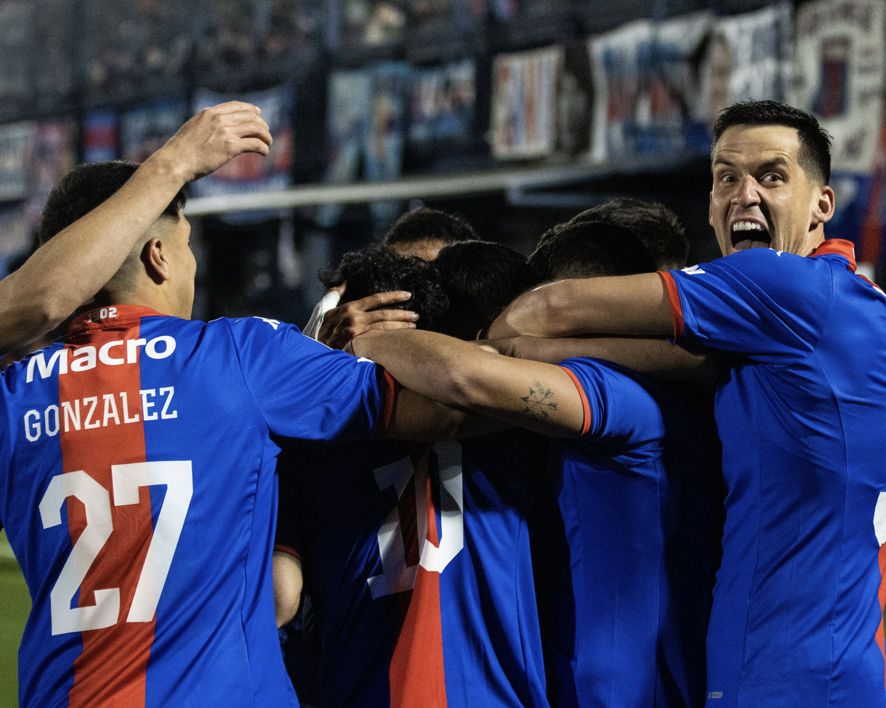
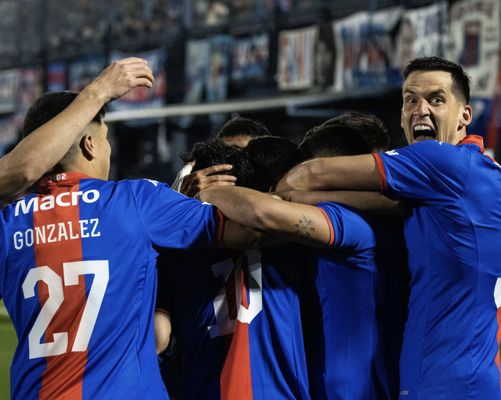

El Matador goleó al Tatengue por la duodécima fecha de la competencia.
 

Por la séptima fecha del torneo de la Liga Profesional de Fútbol, Tigre empató 1 a 1 como local ante Central Córdoba de Santiago del Estero. A pesar de comenzar arriba en el marcador, el Matador no pudo sostener la ventaja y solo pudo sumar un punto.
Tigre goleó 5 a 1 a Unión por la fecha 12 del torneo de la Liga Profesional de Fútbol. Florián Monzón llevó la pelota luego de anotar un hat-trick.
El Matador fue superior durante los 90 minutos y lo reflejó en el resultado. En el primer tiempo, Monzón, tras un centro de Blas Armoa luego de una gran jugada colectiva, se anticipó a toda la defensa rival y anotó el 1 a 0.
Luego, desde la vía aérea, tras un tiro de esquina ejecutado por Gonzalo Maroni, marcó el segundo gol. Al momento del descanso, el marcador era de 2 a 0.
En el complemento, el equipo de Sebastián Domínguez amplió rápidamente la diferencia, primero con un gol de Blas Armoa y luego con otro de Gonzalo Maroni. Aunque la visita logró descontar, Monzón decoró la goleada definiendo por encima del arquero, poniendo el 5 a 1 definitivo.
ESTADIO: José Dellagiovanna
ARBITRAJE: Fernando Rapallini
FECHA: 12
FORMACIONES:
Tigre: Felipe Zenobio, Martín Ortega, Nehuen Paz , Brian Leizza, Nahuel Banegas, Santiago González, Agustín Cardozo, Gonzalo Maroni, Tomás Galván, Blas Armoa y Florián Monzón. DT: Sebastián Domínguez.
Unión: Thiago Cardozo, Nicolás Paz, Franco Pardo, Claudio Corvalan, Lautaro Vargas, Simón Rivero, Joaquín Mosqueira, Mauro Pittón, Bruno Pittón, Nicolás Orsini, Adrián Balboa DT: Cristian González
CAMBIOS:
Lorenzo Scipioni, Martín Garay, Eric Ramírez, Romeo Benítez, Sebastián Medina x Tomás Galván, Santiago Martínez, Florián Monzón, Gonzalo Maroni, Blas Armoa.
No hubo amonestados ni expulsados en ninguno de los dos equipos.